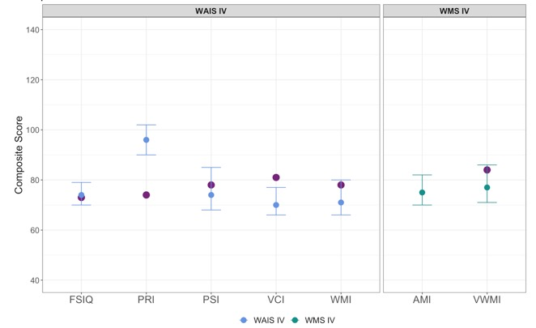
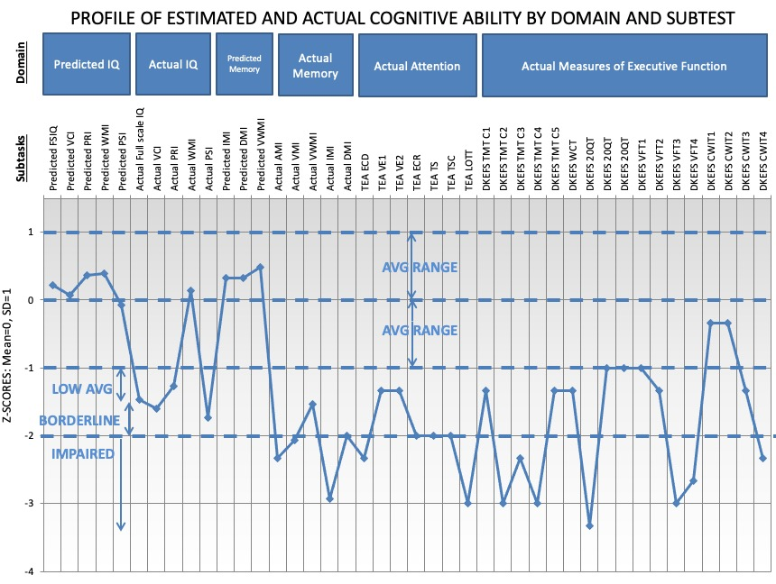
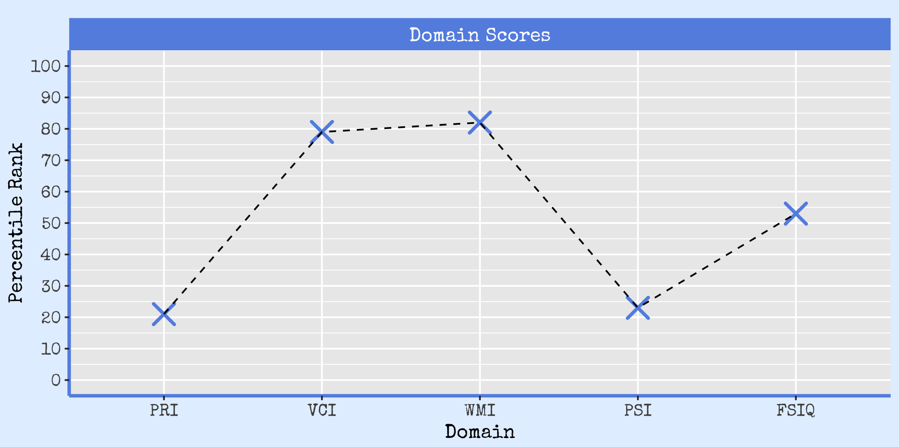
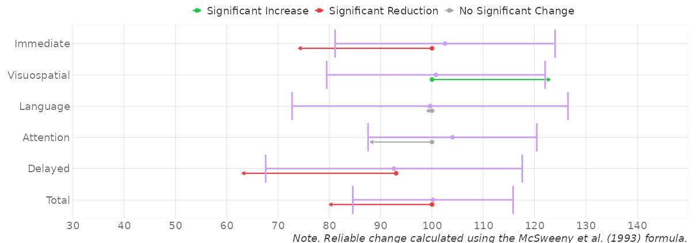

flowchart TD A(Adminster Tests) --> B(Score Tests) B --> C(Convert Scores) C --> D(Tabulate) D --> E(Visualise) E --> F(Report)
Disruptive Technology:
An innovation that creates a new market or enters at the bottom of an existing market and eventually displaces established market-leading firms, products, and alliances


Shiny
An R package that makes it easy to build interactive web apps in the R programming environment.

Web Apps
Scalable.
Simple.
Open Source.
Tabulation
- Table of results are really important.
- Don’t always report the required information.
- Often look ugly and cumbersome.


Visualisation
Data Visualisation is a really important tool for interpreting data!

Visualisation
Data Visualisation is a really important tool for interpreting data!
- More than just aesthetics!
- New insights (e.g., trends).
- Speeds up assimilation.
- Communication.
- Rarely used in practice.
Visualisation
Data Visualisation is a really important tool for interpreting data!
- More than just aesthetics!
- New insights (e.g., trends).
- Speeds up assimilation.
- Communication.
- Rarely used in practice.
Problem 3:
Need to be able to easily visualise a range of test scores in a way that is intuitive for a variety of audiences.
Example Visualisations


 

Footnotes
Hover over an image and click to be directed to the web app.
\(Z\) Score, \(T\) Score, Wechsler Standard Score, Wechsler Scaled Score, Sten Score, Stanine Score, Vineland Scaled Score, ETS Score, etc.
Crawford (2010) in Goldestein (2010) Clinical Neuropsychology: A Practical Guide to Assessment and Management for Clinicians, 2nd Edition